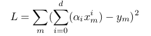
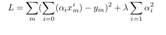

When do we use regularization ?
In Machine learning and statistics, a common task is to fit a model to a set of training data. This model can be used later to make predictions or classify new data points.
When the model fits the training data but does not have a good predicting performance and generalization power, we have an overfitting problem.
Regularization is a technique used to avoid this overfitting problem. The idea behind regularization is that models that overfit the data are complex models that have for example too many parameters. In the example below we see how three different models fit the same dataset.
We used different degrees of polynomials : 1 (linear), 2 (quadratic) and 3 (cubic).
Notice how the cubic polynomial "sticks" to the data but does not describe the underlying relationship of the data points.
Different fitting models
Cost function visualization
Move the cursor below to change the value of λ :
the regularization parameter λ =
How does regularization work ?
In order to find the best model, the common method in machine learning is to define a loss or cost function that describes how well the model fits the data. The goal is to find the model that minimzes this loss function.
In the case of polynomials we can define L as follows:
The idea is to penalize this loss function by adding a complexity term that would give a bigger loss for more complex models. In our case we can use the square sum of the polynomial parameters.
In the visualization above, you can play around with the value of Lambda to penalize more or less the complex models.
This way, for lamda very large, models with high complexity are ruled out. And for small lambda, models with high training errors are ruled out. The optimal solution lies somewhere in the middle.